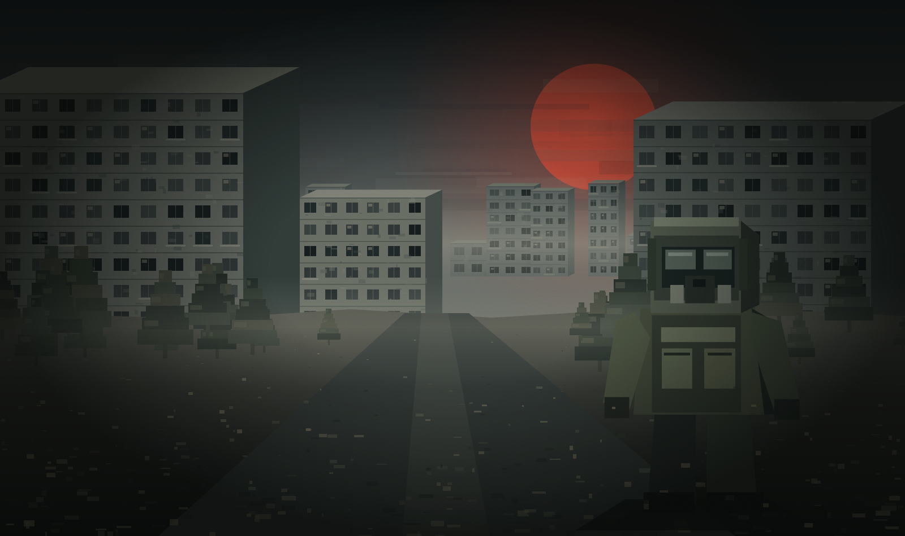
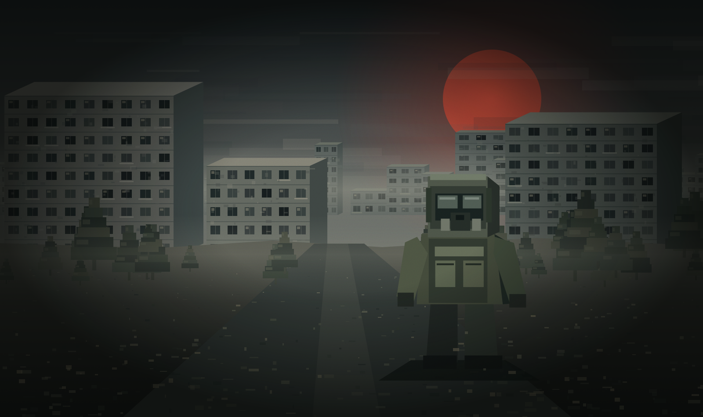

Мир
Город, который замер.
Руины, промышленные территории и неизвестные пути за периметром.
Исследовать мир ↗
КОНЦЕПТ-АРТ / STALBLOCKЗа линией периметра — заброшенные города, снаряжение и неизвестность. Твоя история начинается здесь.
Атмосфера постсоветской Зоны в блочном мире. Исследование, подготовка к вылазкам и развитие персонажа.
Руины, промышленные территории и неизвестные пути за периметром.
Исследовать мир ↗
Подбирай экипировку, закрепляй важные предметы и готовься к следующей вылазке.
Игровые системы ↗STALBLOCK разрабатывается как цельный игровой проект с собственным клиентом и механиками. Сейчас системы проходят тестирование.
Подробнее об игре ↗Персонализация, оружейные слоты и отображение характеристик экипировки.
Собственные интерфейсы и запуск игры проходят тестирование.
Узнай о доступе к игре и клиенту.